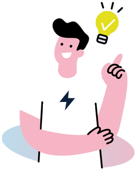

SubitoElettrico Report - Numero 1
Hai cambiato mestiere senza cambiare insegna
Che cosa è cambiato in tre anni per chi vende auto, e che cosa chiedono oggi i clienti.
Un martedì qualunque entra un cliente con il telefono già aperto su tre confronti. Non chiede lo sconto. Chiede dove ricaricherà, quanto spenderà al mese e che cosa succede alla batteria dopo otto anni.
Abbiamo messo insieme i dati pubblici più solidi che abbiamo trovato, italiani quando esistono, esteri quando mancano, e li abbiamo letti. Ogni blocco ha tre parti: il dato, che cosa ci dice e che cosa ne pensiamo noi. La terza parte è un'opinione e la chiamiamo così.
Il listino da difendere cambia ogni sei mesi
la quota dei marchi cinesi sulle immatricolazioni italiane, 2024 contro 2025
Immatricolazioni in Italia, gennaio-luglio, tre marchi
Che cosa ci dice
Nel 2025 il mercato scende del 2,1% e i marchi cinesi passano da 74.500 a 128.600 vetture: se il totale cala e qualcuno cresce, qualcun altro perde. Nel 2026 il mercato cresce dell'8,9%, ma questi tre marchi passano da circa 20.000 a circa 84.000 vetture nei primi sette mesi, più che quadruplicati. La crescita non è distribuita, è concentrata.

Che cosa ne pensiamo noi
Il problema del concessionario non è la concorrenza in sé, è il ritmo. Se il listino cambia ogni sei mesi, la conoscenza del prodotto è un vantaggio con la data di scadenza, e una competenza che scade si rinnova, non si difende. Il vantaggio che resta è quello che non dipende dal modello: sapere come si vive con l'auto, quanto costa al mese, dove si ricarica, che cosa succede dopo la consegna.
Fonte: UNRAE, via Automoto e alVolante. Il totale 2025 usa una definizione ampia di marchi cinesi, i dati 2026 una più stretta: per questo non li sommiamo.
Il cliente confronta da solo e chiude con te
degli acquirenti vuole comunque vedere l'auto di persona
Come si muove l'acquirente americano, 2025
Che cosa ci dice
Il percorso si è diviso in due. La ricerca è migrata sul telefono, la conferma è rimasta fisica. Il cliente arriva dopo aver confrontato più marchi e visita più concessionarie di prima: le tre barre sono salite rispetto agli anni precedenti.
Che cosa ne pensiamo noi
Il salone ha cambiato mestiere: non presenta più il prodotto, che il cliente ha già visto, ma risolve ciò che lo schermo non risolve. E se il cliente visita due concessionarie che vendono la stessa auto, sceglie tra le due in base a chi gli ha risposto meglio sul resto. Il dato è americano e l'Italia può differire, ma la direzione ci sembra credibile. È un'ipotesi che vorremmo confrontare con la tua esperienza.
Fonte: CarGurus con NielsenIQ, 3.030 acquirenti, Stati Uniti, 2025.
Le domande sono cambiate più delle auto
la paura per la batteria, tra chi non ha mai guidato un'elettrica e chi ne possiede una
Quanto si preoccupa chi non guida una EV, chi ha fatto un test drive, chi ne possiede una (Regno Unito)
Che cosa ci dice
Le tre paure non scendono allo stesso modo. Già dopo un solo test drive batteria e ricarica pubblica calano di 14 punti ciascuna, l'autonomia di 9. Tra chi possiede un'elettrica, la ricarica pubblica preoccupa meno di un inglese su otto, mentre l'autonomia continua a preoccuparne uno su due.
Che cosa ne pensiamo noi
Batteria e ricarica sono in gran parte paure di ciò che non si conosce, e si sciolgono con l'esperienza. L'autonomia resiste perché è anche un limite che chi guida incontra davvero. Per un concessionario è il dato più utile del report, perché indica dove intervenire: un test drive che comprenda una ricarica vera, in una colonnina pubblica, tocca le due paure che calano di più. Non l'abbiamo trovato misurato. È un'ipotesi, costa poco e si può provare già sabato.
Fonte: Cox Automotive Europe, 2026 UK EV report, 2.008 automobilisti, fine 2025. Il 79% non ha mai guidato un'elettrica.
Che cosa fanno i mercati un passo avanti
Soldi al mese, non solo prezzo
Una tabella mensile di costo tra elettrica e endotermica.
Dove ricarica, chiesto presto
Prima del preventivo, con un pacchetto per la ricarica di casa.
Restare dopo la consegna
Post-vendita dedicato e stato batteria certificato sugli usati.
Che cosa ci dice
Le pratiche suggerite nel Regno Unito da Cox Automotive Europe e osservate in Norvegia hanno una cosa in comune: spostano la conversazione dal prezzo all'uso. Nessuna fonte pubblica che abbiamo trovato misura però l'effetto sulle vendite, cioè confronta chi offre soluzioni di ricarica con chi non le offre. Esistono intenzioni dichiarate, non vendite: le trovi nella sezione dati.
Che cosa ne pensiamo noi
L'assenza del dato è già un'informazione: il mercato sta ancora indovinando. Un concessionario piccolo può permettersi di provare in una settimana quello che un grande gruppo discute per un anno. Chi comincia a contare, anche solo in quante trattative ha parlato di ricarica e quante si sono chiuse, avrà tra sei mesi il dato che oggi non esiste.
Fonti: Cox Automotive Europe (Regno Unito), AM sul mercato norvegese.
La nostra tesi
Il cliente arriva sapendo l'auto e ignorando la vita con l'auto. Chi risponde sulla seconda vende, chi ripete la prima si fa superare da chi risponde.
Sono tre nostre opinioni, non dati. Su questo lavoriamo e ne parleremo nei prossimi numeri.
Dati e fonti complete
Usato
- ACI: 3.221.145 passaggi di proprietà nel 2025 (+2,1%), 208 ogni 100 auto nuove. Elettriche usate +40%.
Altri marchi, gennaio-luglio 2026
- Ford -23% e Hyundai -27%: la fonte attribuisce il calo di Ford alla fine della Focus e quello di Hyundai alla mancanza di novità.
Paure per esperienza di guida (Regno Unito, fine 2025)
- Autonomia: 66% chi non guida una EV, 57% chi ha fatto un test drive, 50% i proprietari. Batteria: 60%, 46%, 23%. Ricarica pubblica: 47%, 33%, 12%.
- Il 29% dichiara di capire bene gli incentivi. Il 49% dice che i concessionari dovrebbero fare di più per l'adozione, il 25% chiede dimostrazioni su uso, gestione e ricarica domestica (Cox Automotive Europe con Regit, 2025).
Intenzioni sulla ricarica
- Stati Uniti (Escalent EVForward, oltre 1.300 persone, 2024): il 71% sceglierebbe più volentieri un'elettrica da un marchio che gestisce per intero l'installazione della ricarica domestica; il 36% si dice a proprio agio a gestirla da solo. Il soggetto è il costruttore, non il concessionario.
- Regno Unito: il 42% ritiene che concessionari e costruttori dovrebbero offrire pacchetti con la wallbox.
Fonti
- UNRAE, immatricolazioni per marchio: dati riportati da Automoto.it (20 gennaio 2026) e alVolante (7 agosto 2026).
- ACI, bollettino Auto-Trend, passaggi di proprietà 2025: dati riportati da ANSA (13 gennaio 2026) e HDmotori (14 gennaio 2026).
- CarGurus con NielsenIQ, Consumer Insights 2025, 3.030 acquirenti negli Stati Uniti (3 dicembre 2025).
- Cox Automotive Europe, 2026 UK EV adoption and perceptions report, 2.008 automobilisti nel Regno Unito, rilevazione di fine 2025 (riportato da AM).
- Cox Automotive Europe con Regit, oltre 2.000 consumatori nel Regno Unito (13 marzo 2025).
- Escalent EVForward, 2024 Charging Experience DeepDive, oltre 1.300 persone negli Stati Uniti (riportato da InsideEVs, 11 marzo 2025, e da AUTO Connected Car News, 16 marzo 2025).
- AM, G. Mercer, sul mercato norvegese e sul post-vendita.
Il prossimo numero
Iscriviti e decidi tu di che cosa parliamo
Questo report non lo scriviamo per riempire una casella di posta. Lo scriviamo per chi vende auto e vuole risposte da dare ai propri clienti. Più ci dici di te, più le risposte saranno tue.
Ricevi i prossimi numeri
Un tema per volta, i dati letti e la nostra opinione. Gratis, ti cancelli con un clic.
Raccontaci chi sei
Ruolo, tipo di concessionaria, marchi e volumi: così i numeri parlano della tua realtà, non di una media.
Dicci che cosa ti frena
Che cosa rende difficile vendere l'elettrico ai tuoi clienti: ciò che ci indichi diventa il tema dei prossimi numeri.
Serve solo l'email, le domande sono facoltative. Titolare del trattamento: Alex Pallotti. Leggi l'informativa privacy; le caselle del modulo sono facoltative e puoi revocarle in ogni momento.
Preferisci scrivere due righe? tony@subitoelettrico.it